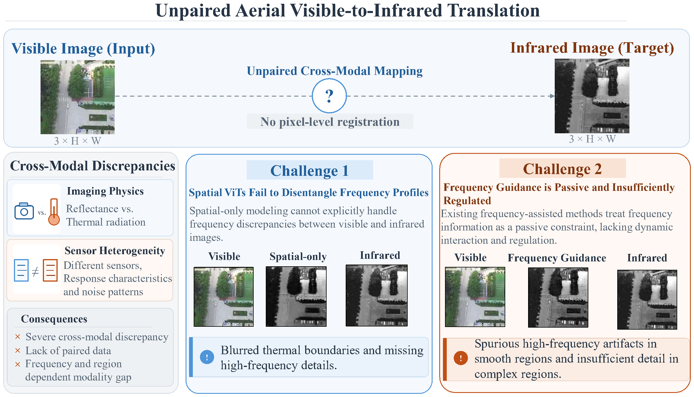
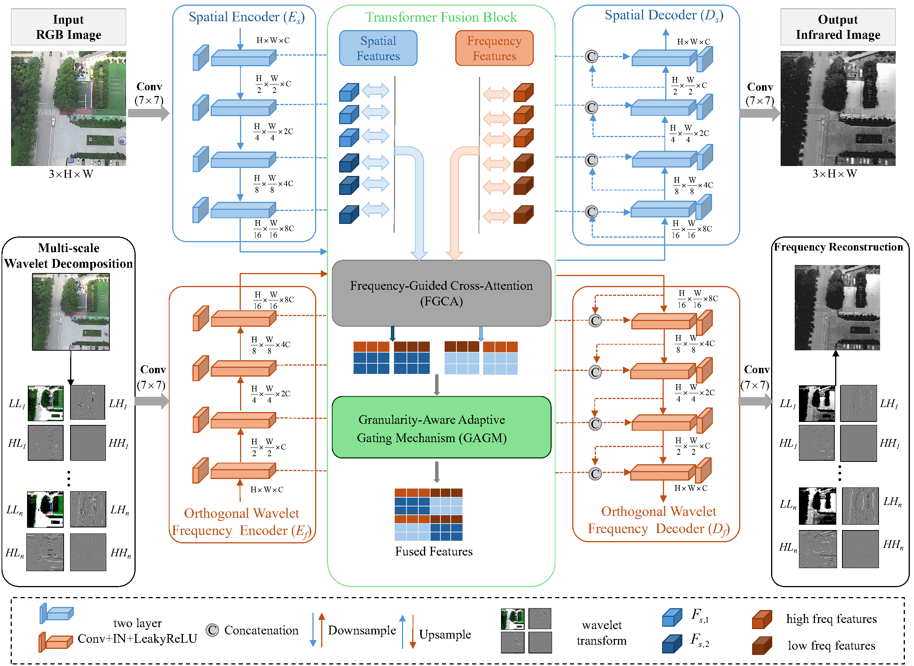
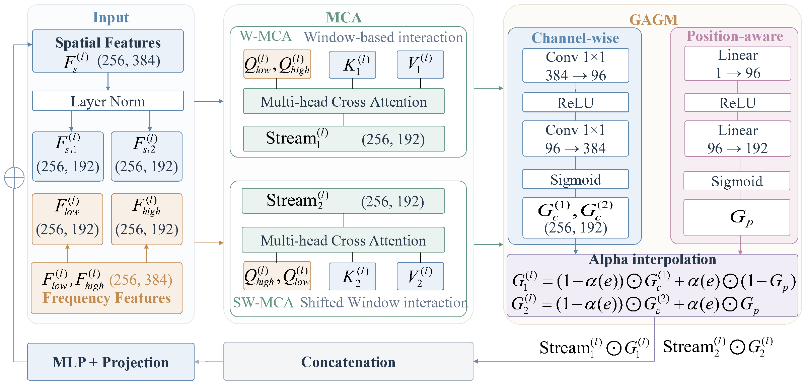
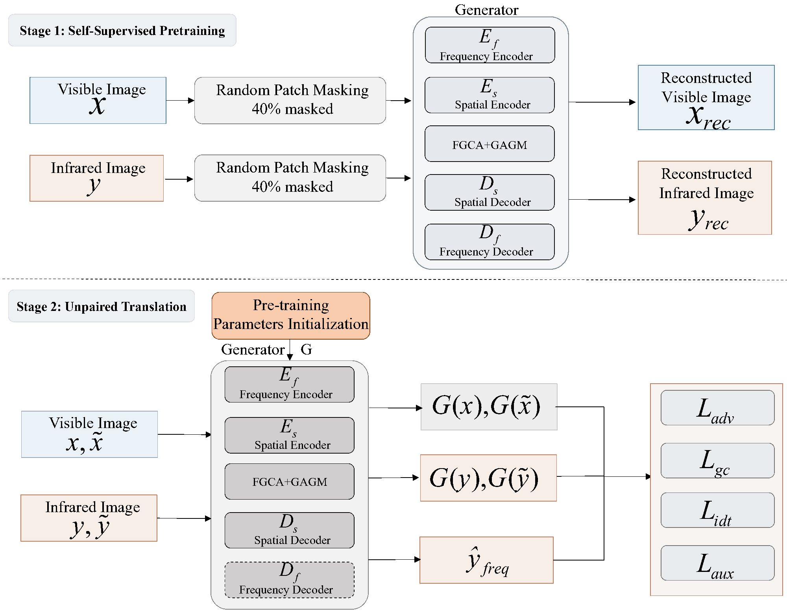
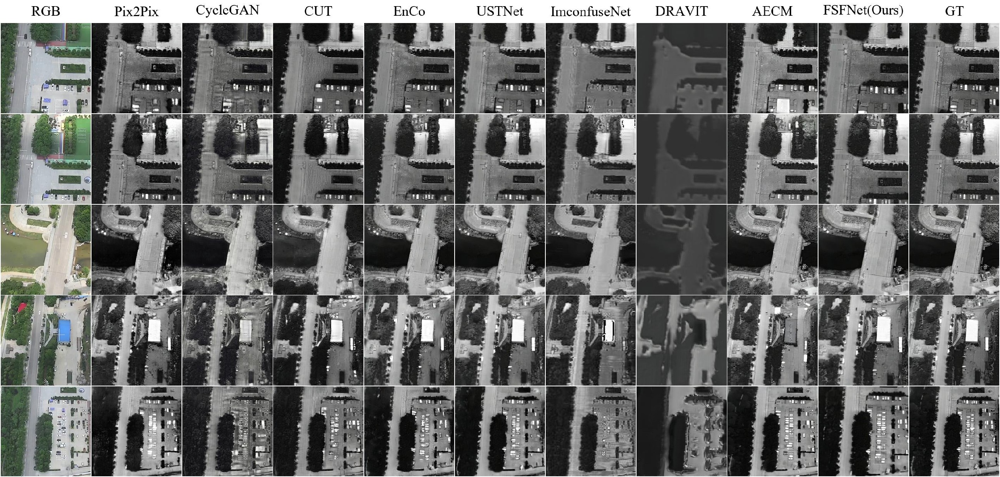
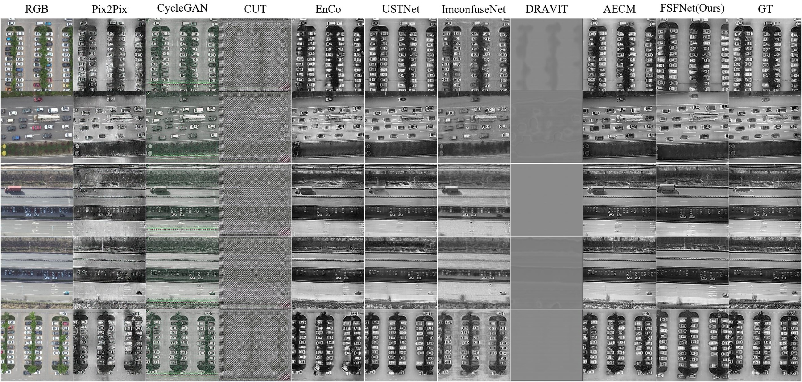
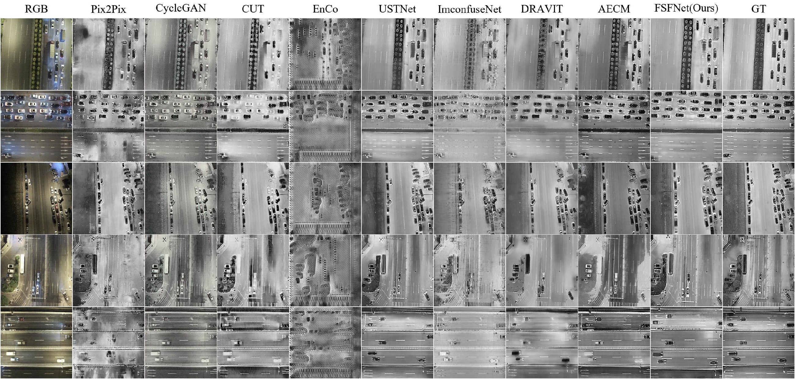

Submitted to Engineering Applications of Artificial Intelligence (EAAI) · Under Review
The core architecture code has been pre-released in this repository, and the complete code will be released upon acceptance.
Thermal infrared imagery enables day-and-night perception from unmanned aerial vehicles, yet large infrared datasets are costly to collect. Visible-to-infrared translation offers a low-cost alternative, but it must be learned from unregistered data because airborne visible and infrared sensors are rarely aligned. The gap between the two modalities varies with frequency and with image region. Low-frequency intensities must be re-mapped from reflectance to thermal radiance, boundaries caused by material or temperature changes persist in both modalities, and many reflection textures have no thermal counterpart. Spatial-domain translators blur thermal boundaries, while uniform frequency guidance transfers visible textures into homogeneous regions.
As the contribution to artificial intelligence, we propose a frequency-guided spatial-frequency collaborative network (FSFNet) for unpaired translation. A Haar wavelet encoder separates low- and high-frequency representations, which act as queries in a frequency-guided cross-attention module to retrieve spatial context. A granularity-aware gating mechanism measures local structural complexity with parameter-free variance statistics and balances local smoothing against cross-window detail at each position. An auxiliary wavelet decoder used only in training anchors the shared bottleneck to infrared spectral structure without extra inference cost.
As the engineering application, FSFNet generates aerial infrared imagery and, on three public daytime and nighttime drone benchmarks, achieves the best learned perceptual image patch similarity and structural similarity on all three. On the Aerial Visible-to-Infrared Image Dataset (AVIID-3), it reduces the Fréchet inception distance by 11.5% and improves the peak signal-to-noise ratio by 0.65 dB over a spatial-only baseline.

Unpaired aerial visible-to-infrared translation and the two failure types that motivate this work. Visible and infrared images are formed by reflected light and emitted radiance, and no pixel-level registration is available during training. Spatial-only translators blur thermal boundaries and lose high-frequency detail. Frequency guidance without regional regulation introduces spurious textures in smooth regions and leaves complex regions short of detail.
A visible camera records reflected sunlight, whereas an infrared camera records radiance emitted according to surface temperature and emissivity. The modality gap is therefore not uniform across frequency bands or image regions: the low-frequency layout must be re-mapped, structural boundaries should be preserved, and reflection-only textures should be suppressed. These observations define four requirements for unpaired translation: (i) separating the components that need different treatment, (ii) letting them guide translation rather than serve as side information, (iii) determining where high-frequency detail should be preserved, and (iv) retaining infrared spectral structure without paired targets.
The main contributions are:

Overall architecture of FSFNet. The spatial encoder Es and the Haar wavelet frequency encoder Ef extract complementary representations in parallel. FGCA uses the low- and high-frequency representations as queries to retrieve spatial context, and GAGM regulates the two attention streams by local structural complexity. The decoder Ds re-injects the frequency representations at every scale, and the auxiliary wavelet decoder Df is used only during training.
| Requirement | Component | Role |
|---|---|---|
| (i) Separate the components | Haar wavelet frequency encoder Ef | Two-level Haar DWT with an independent branch per subband; LL features form Flow, and LH/HL/HH features form Fhigh |
| (ii) Let them guide translation | FGCA | Flow and Fhigh serve as queries over spatial keys and values in regular- and shifted-window streams, and swap streams across layers |
| (iii) Decide where detail is preserved | GAGM | A parameter-free variance-based granularity map weights the two streams at each position, phased in by a progressive schedule |
| (iv) Retain infrared spectral structure | Auxiliary wavelet decoder Df | Reconstructs real infrared images from predicted Haar subbands in the identity pass; removed at inference |

Structure of FGCA and GAGM. The low- and high-frequency representations serve as queries for cross-attention on regular (W-MCA) and shifted (SW-MCA) windows, and their window assignment alternates across layers. GAGM weights the two attention streams with a channel gate and a granularity-guided position gate.

Two-stage training strategy of FSFNet. Stage 1 pretrains the generator by masked image modeling with pixel and wavelet losses. Stage 2 learns the unpaired translation with adversarial, geometric-consistency, identity, and auxiliary losses. The auxiliary wavelet decoder is removed at inference.
| Dataset | Illumination | Total Pairs | Train / Test | Resolution (pixels) |
|---|---|---|---|---|
| AVIID-3 | Daytime | 3,216 | 2,412 / 804 | 512 × 512 |
| Day-DroneVehicle | Daytime | 7,660 | 5,745 / 1,915 | 640 × 512 |
| Night-DroneVehicle | Nighttime | 13,140 | 9,855 / 3,285 | 640 × 512 |
During training, visible and infrared images are sampled independently, and the aligned test pairs are used only for evaluation. All images are resized to 256 × 256.
(a) Quantitative comparison on the AVIID-3 dataset.
| Method | Metric | |||||
|---|---|---|---|---|---|---|
| FID↓ | KID↓ | LPIPS↓ | RMSE↓ | SSIM↑ | PSNR↑ | |
| Pix2Pix | 84.24536 | 0.039870 | 0.284519 | 29.989248 | 0.515265 | 18.956686 |
| CycleGAN | 82.14132 | 0.025350 | 0.300864 | 37.436294 | 0.404162 | 16.847453 |
| CUT | 95.33009 | 0.033596 | 0.350033 | 38.927721 | 0.405757 | 16.492552 |
| EnCo | 84.06712 | 0.028891 | 0.241989 | 26.820914 | 0.499146 | 19.731120 |
| DR-AVIT | 214.85513 | 0.145197 | 0.593349 | 70.787318 | 0.302367 | 11.627863 |
| USTNet | 50.87250 | 0.006881 | 0.208130 | 25.571699 | 0.574911 | 20.204583 |
| ImconfuseNet | 97.62250 | 0.032440 | 0.283797 | 33.005892 | 0.455096 | 17.926994 |
| CycleMamba | 179.79673 | 0.163505 | 0.649781 | 81.332077 | 0.162434 | 9.975021 |
| AECM | 43.26300 | 0.001933 | 0.246329 | 38.473896 | 0.466449 | 16.835820 |
| FSFNet (Ours) | 45.00005 | 0.004547 | 0.194302 | 23.714777 | 0.584978 | 20.851626 |
(b) Quantitative comparison on the Day-DroneVehicle dataset.
| Method | Metric | |||||
|---|---|---|---|---|---|---|
| FID↓ | KID↓ | LPIPS↓ | RMSE↓ | SSIM↑ | PSNR↑ | |
| Pix2Pix | 160.00029 | 0.137296 | 0.313117 | 54.334250 | 0.353191 | 13.638398 |
| CycleGAN | 94.05906 | 0.054729 | 0.342277 | 58.77783 | 0.268798 | 12.877211 |
| CUT | 445.85667 | 0.532393 | 0.684109 | 73.757324 | 0.063644 | 10.802577 |
| EnCo | 83.00264 | 0.048721 | 0.299899 | 55.599082 | 0.376335 | 13.553605 |
| DR-AVIT | 443.69373 | 0.452442 | 0.853234 | 57.026964 | 0.343010 | 13.132876 |
| USTNet | 27.91764 | 0.003475 | 0.216254 | 47.719773 | 0.486843 | 14.992926 |
| ImconfuseNet | 69.78602 | 0.033836 | 0.302829 | 48.990387 | 0.363916 | 14.577407 |
| CycleMamba | 244.53473 | 0.199789 | 0.741614 | 75.562867 | 0.129687 | 10.700540 |
| AECM | 25.06893 | 0.000781 | 0.232957 | 54.929075 | 0.431469 | 13.689555 |
| FSFNet (Ours) | 25.16958 | 0.001737 | 0.209149 | 47.153408 | 0.500442 | 15.094191 |
(c) Quantitative comparison on the Night-DroneVehicle dataset.
| Method | Metric | |||||
|---|---|---|---|---|---|---|
| FID↓ | KID↓ | LPIPS↓ | RMSE↓ | SSIM↑ | PSNR↑ | |
| Pix2Pix | 83.18299 | 0.072839 | 0.347109 | 50.658449 | 0.358204 | 14.140496 |
| CycleGAN | 50.52592 | 0.030129 | 0.391831 | 55.457723 | 0.304812 | 13.385118 |
| CUT | 79.82762 | 0.062109 | 0.402816 | 56.226394 | 0.329726 | 13.237177 |
| EnCo | 137.4847 | 0.122597 | 0.596731 | 63.097004 | 0.153195 | 12.238241 |
| DR-AVIT | 39.86782 | 0.020800 | 0.342772 | 52.329855 | 0.359702 | 13.856874 |
| USTNet | 18.39930 | 0.004124 | 0.301192 | 48.862267 | 0.441370 | 14.495124 |
| ImconfuseNet | 68.15952 | 0.048021 | 0.365475 | 46.865640 | 0.335152 | 14.856630 |
| CycleMamba | 311.45272 | 0.342749 | 0.646167 | 63.269658 | 0.206319 | 12.169338 |
| AECM | 17.61687 | 0.004252 | 0.328866 | 57.859153 | 0.346517 | 13.052859 |
| FSFNet (Ours) | 17.95355 | 0.003609 | 0.298798 | 48.991262 | 0.447708 | 14.485825 |
Config. 0 is the spatial-only counterpart of FSFNet. Config. 1 adds the dual-path generator (wavelet encoder, FGCA, and multiscale frequency injection), Config. 2 further adds the auxiliary wavelet decoder, and Config. 3 is the full FSFNet with GAGM.
(a) Ablation results on the AVIID-3 dataset.
| Config. | Component | Metric | |||||||
|---|---|---|---|---|---|---|---|---|---|
| Dual-path generator | Aux. decoder | GAGM | FID↓ | KID↓ | LPIPS↓ | RMSE↓ | SSIM↑ | PSNR↑ | |
| 0 | ✗ | ✗ | ✗ | 50.87250 | 0.006881 | 0.208130 | 25.571699 | 0.574911 | 20.204583 |
| 1 | ✓ | ✗ | ✗ | 46.19873 | 0.005581 | 0.204816 | 25.874743 | 0.573891 | 20.171928 |
| 2 | ✓ | ✓ | ✗ | 45.42301 | 0.005299 | 0.196854 | 24.538258 | 0.582915 | 20.591140 |
| 3 | ✓ | ✓ | ✓ | 45.00005 | 0.004547 | 0.194302 | 23.714777 | 0.584978 | 20.851626 |
(b) Ablation results on the Day-DroneVehicle dataset.
| Config. | Component | Metric | |||||||
|---|---|---|---|---|---|---|---|---|---|
| Dual-path generator | Aux. decoder | GAGM | FID↓ | KID↓ | LPIPS↓ | RMSE↓ | SSIM↑ | PSNR↑ | |
| 0 | ✗ | ✗ | ✗ | 27.91764 | 0.003475 | 0.216254 | 47.719773 | 0.486843 | 14.992926 |
| 1 | ✓ | ✗ | ✗ | 25.74340 | 0.002036 | 0.213349 | 48.694017 | 0.493474 | 14.784883 |
| 2 | ✓ | ✓ | ✗ | 27.14012 | 0.002664 | 0.221713 | 49.416147 | 0.487257 | 14.736482 |
| 3 | ✓ | ✓ | ✓ | 25.16958 | 0.001737 | 0.209149 | 47.153408 | 0.500442 | 15.094191 |
(c) Ablation results on the Night-DroneVehicle dataset.
| Config. | Component | Metric | |||||||
|---|---|---|---|---|---|---|---|---|---|
| Dual-path generator | Aux. decoder | GAGM | FID↓ | KID↓ | LPIPS↓ | RMSE↓ | SSIM↑ | PSNR↑ | |
| 0 | ✗ | ✗ | ✗ | 18.39930 | 0.004124 | 0.301192 | 48.862267 | 0.441370 | 14.495124 |
| 1 | ✓ | ✗ | ✗ | 58.47422 | 0.044026 | 0.363766 | 54.264105 | 0.395591 | 13.556499 |
| 2 | ✓ | ✓ | ✗ | 19.23238 | 0.004763 | 0.302936 | 49.074746 | 0.443146 | 14.470825 |
| 3 | ✓ | ✓ | ✓ | 17.95355 | 0.003609 | 0.298798 | 48.991262 | 0.447708 | 14.485825 |
The dual-path generator lowers FID on AVIID-3 and Day-DroneVehicle. At night, where visible frequency cues are weak, the auxiliary decoder brings the FID of the dual-path model back from 58.47 to 19.23; in texture-rich daytime scenes, GAGM reverses the degradation of unregulated frequency guidance. The full model is the most consistent across all three datasets.
Model complexity and inference efficiency (input 256×256, batch size 1, single NVIDIA GeForce RTX 5090). G, D, and Others list the parameters of the generator, the discriminator, and the remaining modules in millions.
| Method | Params (M) | FLOPs (G) | Time (ms) | G (M) | D (M) | Others (M) |
|---|---|---|---|---|---|---|
| Pix2Pix | 57.18 | 36.30 | 2.00 | 54.41 | 2.77 | -- |
| CycleGAN | 28.29 | 113.73 | 18.06 | 22.76 | 5.53 | -- |
| CUT | 16.91 | 128.26 | 6.51 | 11.38 | 5.53 | -- |
| EnCo | 14.66 | 128.26 | 10.68 | 11.38 | 2.77 | F: 0.51 |
| DR-AVIT | 56.84 | 162.67 | 24.56 | 31.69 | 25.15 | -- |
| USTNet | 33.69 | 69.49 | 29.57 | 30.92 | 2.77 | -- |
| ImconfuseNet | 0.28 | 32.31 | 12.33 | 0.26 | 0.02 | -- |
| CycleMamba | 64.63 | 44.78 | 27.38 | 61.86 | 2.77 | -- |
| AECM | 27.22 | 128.26 | 9.23 | 11.38 | 1.18 | S-Attn: 14.66 |
| FSFNet (Ours) | 35.44 | 84.30 | 36.14 | 32.67 | 2.77 | -- |
FSFNet translates a 256 × 256 image in 36.14 ms (about 27.7 images per second) with a single forward pass, and the auxiliary decoder adds no inference cost because it is removed after training. This throughput supports efficient large-scale generation of infrared training data for aerial perception tasks.
Qualitative comparison of FSFNet with eight baselines on five representative scenes from each dataset. From left to right: visible input, Pix2Pix, CycleGAN, CUT, EnCo, USTNet, ImconfuseNet, DR-AVIT, AECM, FSFNet, and ground-truth infrared image.

Qualitative comparison on the AVIID-3 dataset. Rows 1 and 2 show urban buildings and vegetation, Row 3 shows a river crossing with a bridge, and Rows 4 and 5 show industrial structures and parking facilities.

Qualitative comparison on the Day-DroneVehicle dataset. Rows 1 and 5 show densely packed parking lots, and Rows 2–4 show multi-lane roads and highways.

Qualitative comparison on the Night-DroneVehicle dataset. Rows 1–3 show urban intersections with headlight glare, and Rows 4 and 5 show dark arterial roads and interchanges.
The core architecture code has been pre-released in this repository, and the complete code will be released upon acceptance of the paper.
| Released now | Released upon acceptance |
|---|---|
| Spatial encoder, Haar wavelet frequency encoder, and multiscale frequency-guided decoder | Implementation of FGCA and GAGM |
| Two-stage training pipeline: masked-image-modeling pretraining and unpaired translation training | Implementation of the auxiliary wavelet decoder Df |
| Haar wavelet transform, PatchGAN discriminator, data loading, testing, and evaluation scripts | Loss implementations and pretrained weights |
| Interfaces of FGCA, GAGM, and Df with input and output specifications | |
Training, testing, and evaluation scripts of all compared methods (baseline/) |
See the repository for the directory structure, data preparation, and usage instructions.
The citation will be provided upon publication.